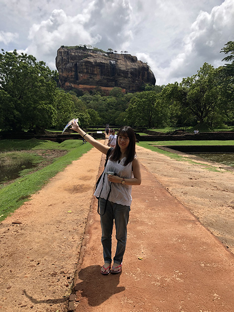

「安くて英語が学べる点で、参加を決めました。
１か月海外に滞在するのは初めてでした。
発展途上国で生活というのは電気や水のことなど、生活の面で不安はありました。
英語レッスンでは、わからないことを聞ける環境が、とても良かったです。
宿題でも英語力は伸びたと思います。
ホームステイ先は、想像以上に素敵なお家で全く不便のない生活ができました。
毎日のようにフルーツをだしてくれたり、どこかに行ったときは地元のレストランに連れて行ってくれたりと本当にありがたかったです。
また毎日美味しいご飯を作って下さいました。
家族同士の会話がシンハラ語のため、家族同士の会話に入ることは難しかったです。
法事や結婚式に参加せていただいたことはとても貴重な経験でした。
低開発村視察では、シナモンブランテーションに行きました。
想像していた低開発村はもっと子供がたくさんで働いているということでしたが、全くそんなことはなく温かいご家族が迎えてくれました。

スリランカに行く前はテレビで見る東南アジアのイメージで、いろんなものが発展していない印象でした。
行った後は、発展しているものはしているという感じです。
いろんな宗教の方がいましたし、格差はとても感じました。
次は観光で行きたいと思います。
ほんの1ヶ月でしたが本当に良い思い出ができました。
自分自身もっと英語を勉強していくべきだったと思います。
ホストファミリーにもいろんなことを経験させてもらい、想像以上に快適な生活と美味しいご飯に恵まれました。
発展途上に滞在するのは初めてで、いろんな戸惑いもありましたが、それ以上に発見できたものもたくさんありました。
今回は本当に貴重過ぎる経験で、一生忘れません。
本当にお世話になりました。
ありがとうございました！」